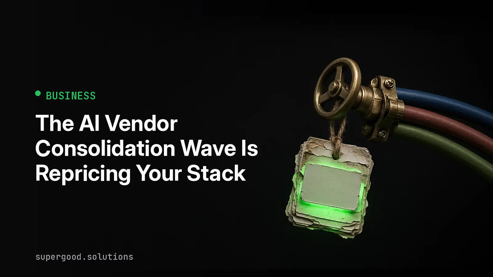

The AI Vendor Consolidation Wave Is Repricing Your Stack
TL;DR: When the companies that sit between your app and the models get bought, your cost curve now belongs to someone else's board. Audit which layer of your stack is a chokepoint before a new contract shows up uninvited.
Key Insight
Most teams track one AI vendor: the model provider. The real exposure is usually one layer over. Model gateways, routers, eval platforms, vector stores, and observability tools all sit in the request path, and each one is a small company that can be acquired, repriced, or folded into a bigger product.
Consolidation in this layer is predictable. A router sees every prompt, every latency number, and every cost line across many models. That position is valuable, and a buyer paying a premium for it expects to recover the premium. Recovery comes from pricing, bundling, or steering traffic toward the buyer's own models.
None of this is an argument against routers or gateways. They are the right tool for most production systems. The argument is that "stable API cost" was never a property of the model. It was a property of a market with many small players, and that market is thinning.
Why Teams Miss This
Teams price their AI spend as tokens times rate. That formula only covers the model line item. It leaves out the margin each middle layer adds, and the clauses that let those layers change terms.
Three habits make it worse:
- Contracts get signed at the free or usage tier and never revisited, so the real terms are whatever the vendor's pricing page says this month.
- Prompts, tool schemas, and retry logic quietly adopt the router's quirks, so switching later means rewriting behavior, not just changing a URL.
- Nobody owns the question "what happens if this vendor is acquired," because it belongs to engineering, procurement, and finance at once.
How to Actually Do It
Start with a one-page dependency map. List every vendor in the request path of your top three AI workflows, then score each on two questions: how long would a swap take, and what does a 30 percent price change do to unit economics?
Then put a thin seam in your own code so the answers get shorter over time. The point is that application code never imports a vendor SDK directly.
# llm_gateway.py: the only file that knows which vendor is in the path
import os
from openai import OpenAI
PROVIDERS = {
"primary": {"base_url": os.environ["LLM_PRIMARY_URL"], "key": os.environ["LLM_PRIMARY_KEY"]},
"fallback": {"base_url": os.environ["LLM_FALLBACK_URL"], "key": os.environ["LLM_FALLBACK_KEY"]},
}
def complete(messages, model, tier="primary"):
cfg = PROVIDERS[tier]
client = OpenAI(base_url=cfg["base_url"], api_key=cfg["key"])
return client.chat.completions.create(model=model, messages=messages)Most gateways and open source proxies speak the OpenAI-compatible format, so this seam is cheap. Point the fallback tier at a different path, either another gateway or a direct provider endpoint, and run a small share of real traffic through it every week. A fallback you have never exercised is a hope, not a plan.
Finally, add the review to your calendar. Read each vendor's terms and pricing page quarterly, and again within 30 days of any acquisition news. Ask for price protection or a termination right on change of control while you still have bargaining power, which is before the deal closes.
What We've Learned
The cheapest insurance is portability you actually test. Teams that keep a warm second path, keep prompts free of vendor-specific tricks, and log cost per workflow can absorb a repricing in a sprint. Teams without those three things negotiate from a corner.
This week's experiment: build the dependency map for one workflow, time how long a fallback swap really takes, and write the number down. If it is longer than a week, that is your real exposure.
Sources
- OpenRouter documentation on unified model routing: openrouter.ai/docs
- LiteLLM proxy documentation, an open source OpenAI-compatible gateway: docs.litellm.ai
- Latent Space, the AI engineering publication that inspired this topic: latent.space
Have a specific workflow in mind?
Bring it to a Quick Scan — a live working session where we'll tell you honestly whether it should be an agent, a workflow, or left alone, before you spend a dollar building it. You get 3 prioritized recommendations on the call, a one-page summary after, and the $500 credited toward any engagement within 30 days.
Get new posts + practical agent-ops notes
One email when something new goes up. No nurture sequence, no spam — unsubscribe whenever you want.